01 近いから、迫力がある。
打ち上げは約3,000発。地方の規模だけど、川幅が近いから光も音もすぐそこに。
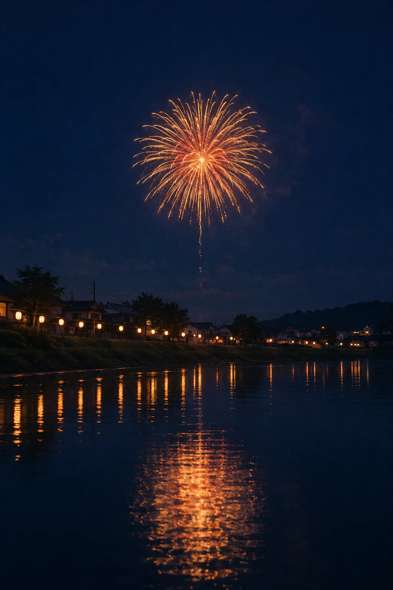
TOOMACHI SUMMER FIREWORKS

気合いは、いらないよ〜。
今年の夏、
まだ予定決まってない人へ。
ふらっと寄れる、夏のいちばん。
※1名¥1,500（税込）・前日17時までキャンセル無料・先着順
※相談だけでも気軽にどうぞ。空室・プランはスタッフが個別にご案内
#MOYAMOYA
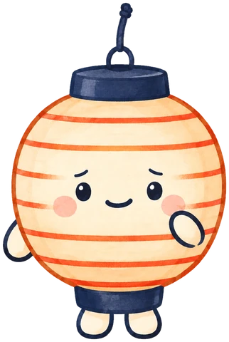
わかる〜。ちょっと疲れちゃうよね。
#TOOMACHI
打ち上げは約3,000発。地方の規模だけど、川幅が近いから光も音もすぐそこに。
都市部の大きな大会に比べて、混雑はおだやか。座って、のんびり夜空を見上げられます。
ここは思ったよりゆったり見られて、ふらっと来てよかった。
#EVENT
入場無料
¥1,500（税込）／1名
※2名なら¥3,000（税込）
※前日17時までキャンセル無料・先着順

座ってのんびり見たいなら、
席があると安心だよ。
#ONE DAY
夕方、駅に到着
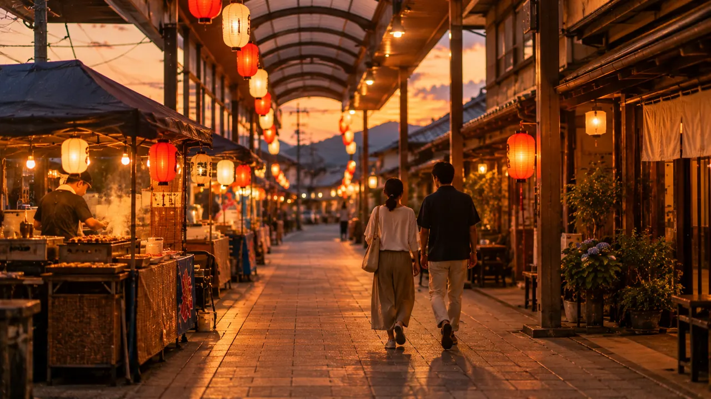
河川敷へ
花火があがる
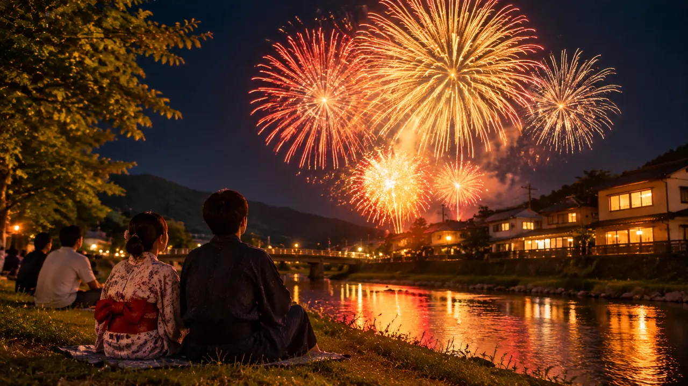
町に泊まる
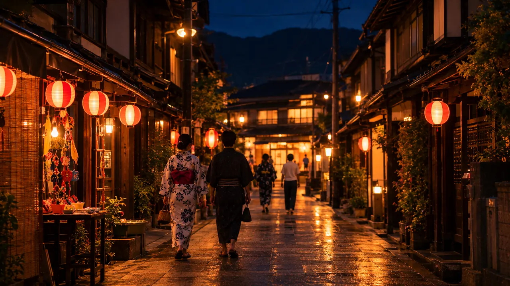
純喫茶でモーニング
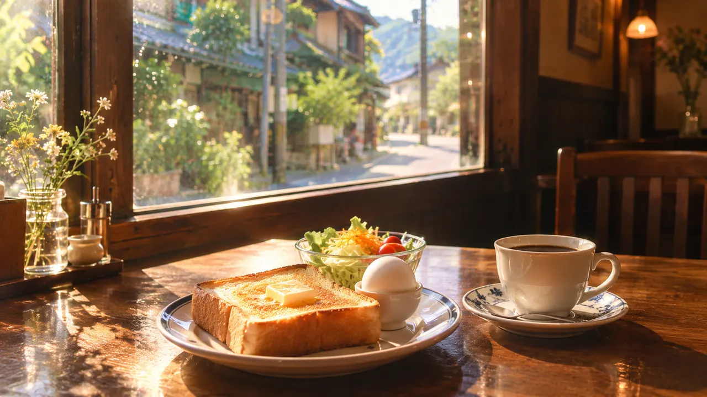
#FEEL
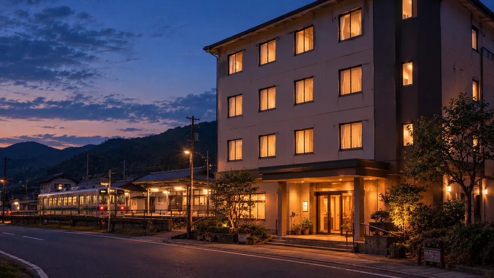
子どものころの夏休みみたいな、夜店のにおいと提灯の灯り。
電車にゆられて、少しだけ遠くへ。いつもの週末が、夏の思い出になる。
いつもの服で、ふらっとおいでね。
#STAY
泊まると、花火のあとも
のんびりできるよ。
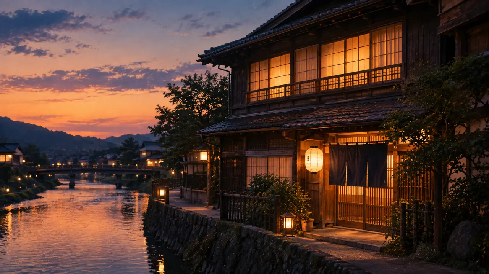
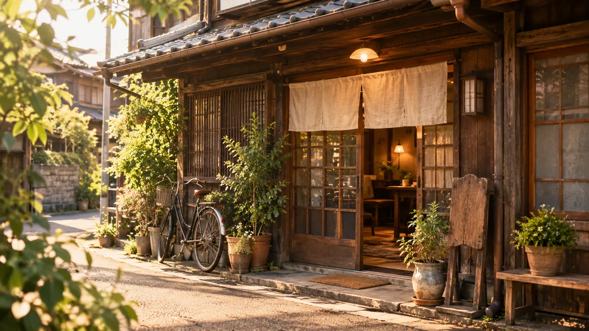
1泊2食付き ¥9,000台〜
（目安・施設やプランにより異なります）
※相談だけでも気軽にどうぞ。空室・プランはスタッフが個別にご案内
宿名を送るだけでOK。営業時間内に個別にご案内します（夏季は土日も対応）
※ご希望に添えない場合もあります
#EAT
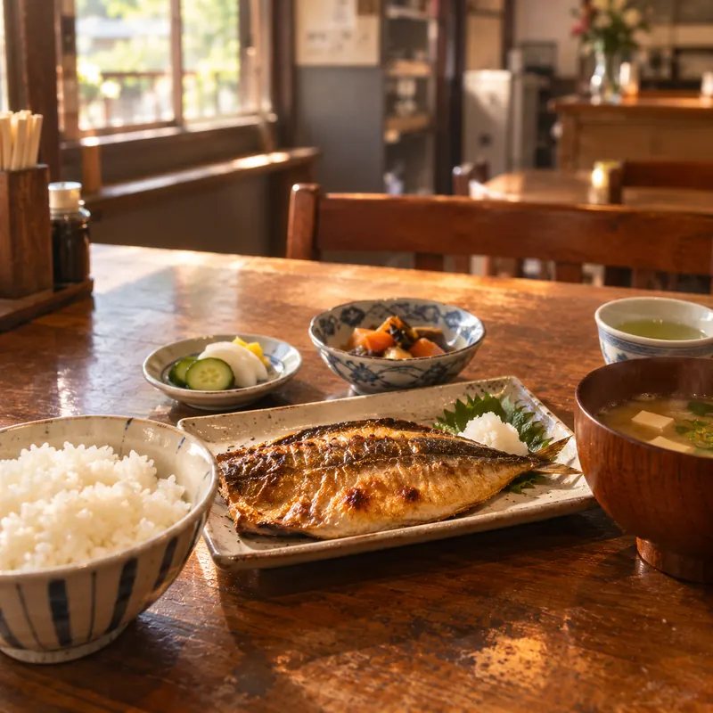
和食・定食
まるや食堂
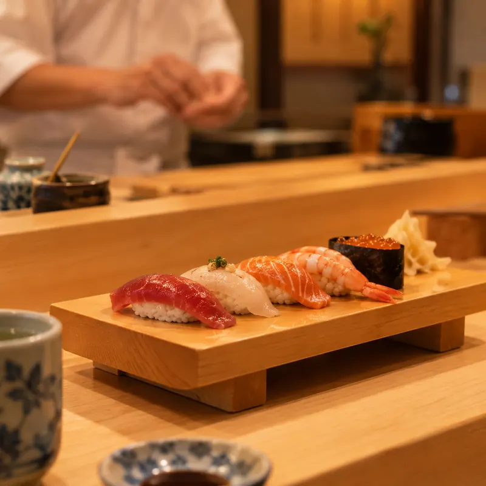
和食・寿司割烹
鮨 かわせみ
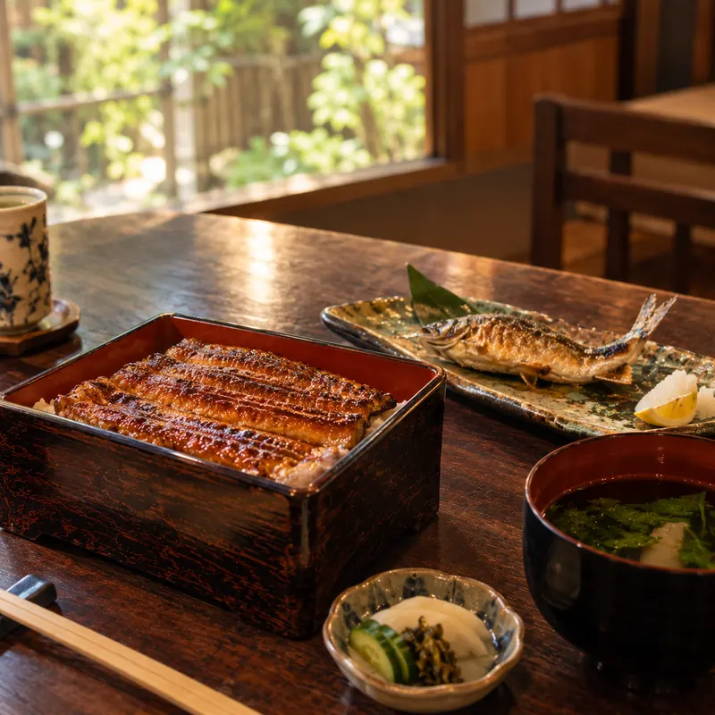
和食・郷土料理
川魚料理 うな善
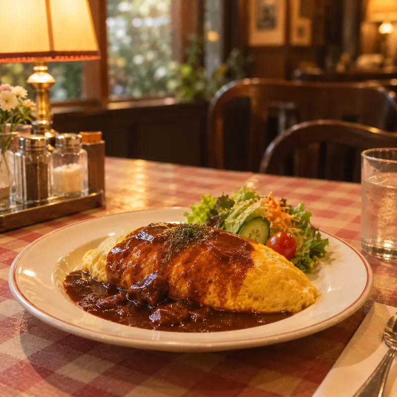
洋食
洋食屋 ハナビ亭
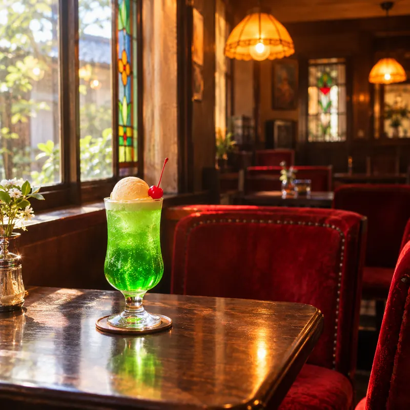
喫茶店
純喫茶 ランタン
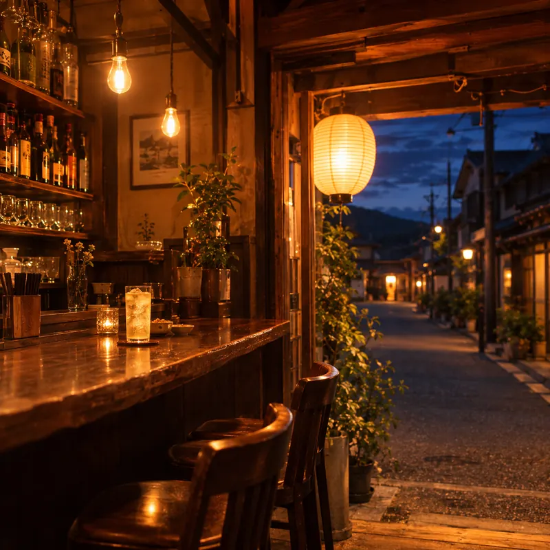
バー兼カフェ
ヨミセ
#VOICE
正直、花火大会ってどこも混んでて疲れるイメージだったんですが、ここは思ったよりゆったり見られて、ふらっと来てよかったです。
商店街の出店を見ながら歩くだけでも楽しくて、花火が始まる前から十分楽しめました。
駅からすぐだったので、思っていたより気軽に行けました。
派手さよりも、ゆったりした雰囲気が良くて、また来てもいいかなと思いました。
#FAQ
日帰り観覧は予約不要です。
ゆったり座って見たい場合は、有料観覧席のご予約をおすすめします。
都市部の大規模花火大会に比べると、混雑は穏やかです。
ゆったり過ごしたい方に向いています。
小雨決行です。荒天時は翌日に延期となる場合があります。
最新情報は当日公式LINEでご案内します。
有料観覧席は前日17時まで無料でキャンセル可能です。
最寄り駅から徒歩約10分です。
当日は周辺道路が混雑するため、お車でのご来場はおすすめしておりません。
LP内でご紹介している町内の宿泊施設から気になるところをお選びいただき、公式LINEからお気軽にご相談ください。
空室状況やプラン内容について、スタッフが個別にご案内します。
はい。混雑が激しくない規模感のため、お子様連れのご家族にも来場いただいています。
商店街エリアに多数の出店が並びます。
食べ歩きグルメも楽しみのひとつです。
予約なしでも楽しめます。
ゆったり見るなら、観覧席の事前予約がおすすめです。

気が向いたら、待ってるね。
※1名¥1,500（税込）・前日17時までキャンセル無料・先着順
※相談だけでも気軽にどうぞ。空室・プランはスタッフが個別にご案内
#ACCESS
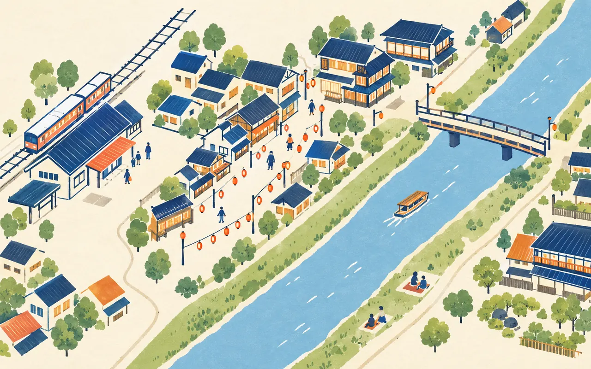